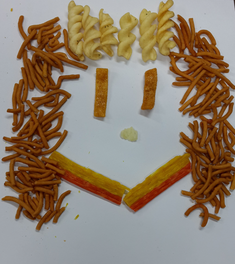

초등학교 3학년은 학교생활이나 사회생활 적응이 되는 시점이다. 발달에서 중요한 전환기 중 하나로, 신체적, 인지적, 사회적, 그리고 정서적 측면에서 두드러진 변화를 경험하는 시기이다. 이 시기의 아동들은 학교와 사회 환경에서의 경험을 통해 점차 자율성을 확립하고, 또래 집단 내에서의 상호작용을 통해 사회적 기술을 연마한다. 이러한 특성을 이해하는 것은 초등3학년 아동의 건강한 성장과 학습을 지원하는 데 핵심이다.
1. 신체적 발달
1) 운동 능력발달
초등학교 3학년 학생들은 대근육 운동과 소근육 운동 능력이 동시에 발달한다. 이는 체육 활동과 놀이를 통해 관찰될 수 있다. 축구, 줄넘기와 같은 활동은 대근육의 발달을 촉진하며, 글쓰기나 미술 활동은 소근육의 정교한 움직임을 요구한다.
2) 체력 향상
아동들은 에너지가 풍부하며, 활발한 신체 활동에 대한 필요성이 증가한다. 이를 통해 심폐 기능과 근력의 발달이 이루어진다. 적절한 운동은 성장판의 발달에도 긍정적인 영향을 미친다.
3) 성장 속도의 다양성
초등 3학년 학생들 사이에서 신체 성장의 속도는 개인차가 크다. 이로 인해 키와 체중, 운동 능력에서 차이가 나타나며, 이는 또래 관계에서 자존감에 영향을 미칠 수 있다.
2. 인지적 발달
1) 추상적 사고의 시작
구체적 조작기에서 점차 추상적 사고로 이행하는 시기로, 논리적 사고와 문제 해결 능력이 향상된다. 아동들은 수학적 개념을 이해하고, 복잡한 연산 문제를 다룰 수 있는 능력을 발달시킨다.
2) 독서와 쓰기 능력의 향상
이 시기의 아동들은 독서를 통해 다양한 단어와 개념을 습득하며, 글쓰기를 통해 자신의 생각과 감정을 표현하는 능력을 키운다. 독서와 쓰기는 학습의 기반을 다지는 중요한 활동이다.
3) 집중력의 증가
초등학교 3학년 아동들은 이전 학년에 비해 더 오래 집중할 수 있는 능력을 발달시킨다. 이는 학습 과제의 복잡성이 증가함에 따라 필수적인 요소이다.

3. 사회적 및 정서적 발달
1) 사회적 관계의 중요성
이 시기의 아동들은 또래와의 관계에서 점점 더 큰 의미를 부여한다. 친구 관계가 강화되며, 집단 활동과 협동 과제를 통해 사회적 기술을 학습한다. 또한, 집단 내에서의 자신의 역할과 위치에 민감해진다.
2) 자아 개념의 발달
아동들은 자신에 대한 인식을 형성하고, 자신의 능력과 한계를 인지하기 시작한다. 이는 자신감과 자존감의 형성에 중요한 기초가 된다. 부모와 교사의 긍정적인 피드백은 이러한 과정을 강화하는 데 필수적이다.
3) 감정 조절 능력의 향상
초등 3학년 아동들은 자신의 감정을 더 잘 이해하고 표현할 수 있는 능력을 발달시킨다. 또한, 충동을 조절하고 감정을 조절하는 방법을 배우기 시작한다. 그러나 이 과정에서 여전히 성인의 지도와 지원이 필요하다.
교육적 접근
1) 학습 스타일의 이해
모든 아동은 각기 다른 학습 스타일을 가지고 있으며, 이를 이해하는 것은 학습 효율성을 높이는 데 중요하다. 교사는 개별 아동의 강점과 약점을 파악하고, 이에 맞춘 지도를 제공해야 한다.
2) 자기 주도 학습의 촉진
초등학교 3학년은 학습에 대한 호기심과 흥미를 유지하면서 자기 주도적으로 학습하는 방법을 배워야 하는 시기이다. 이를 위해 교사와 부모는 적절한 환경을 제공하고, 동기를 부여해야 한다.
3) 사회적 기술과 감정 교육
학교 교육 과정에서 사회적 기술과 감정 교육을 포함시키는 것은 아동들이 건강한 관계를 형성하고, 감정을 효과적으로 관리하는 데 도움을 준다. 이를 통해 갈등 상황에서의 문제 해결 능력도 키울 수 있다.
4. 부모와 교사의 역할
1) 긍정적인 지지 제공
부모와 교사는 아동에게 긍정적인 지지와 피드백을 제공하여 자아 존중감을 높이고, 학습과 사회적 활동에서의 자신감을 강화해야 한다.
2) 일관된 규율과 지도
초등 3학년 아동들은 규율을 이해하고 따르는 능력을 발달시키고자 한다. 일관된 규칙과 기대치는 아동의 책임감을 키우는 데 도움을 준다.
3) 정서적 안정 제공
부모와 교사는 아동이 정서적으로 안정감을 느낄 수 있도록 해야 한다. 이는 건강한 감정 조절과 스트레스 관리 능력의 발달에 필수적이다.
참고문헌
Piaget, J. (1972). The Psychology of the Child. Basic Books.
Erikson, E. H. (1993). Childhood and Society. W. W. Norton & Company.
Vygotsky, L. S. (1978). Mind in Society: The Development of Higher Psychological Processes. Harvard University Press.
김재은 (2019). "초등학생의 사회적 발달과 학교 환경의 상관관계." 교육학 연구, 45(3), 123-142.
2024.04.08 - [상담] - 초등 6학년 아동기 - 신체적, 사회적, 정서적 특성
초등 6학년 아동기 - 신체적, 사회적, 정서적 특성
초등학교 6학년 아동은 대체로 11~12세에 해당하는데, 이 시기는 신체적, 사회적, 정서적으로 급격한 변화가 일어나는 시기이다. 이 단계의 아동은 학교생활과 또래 관계에서 다양한 도전과 기회
think-sis.co.kr